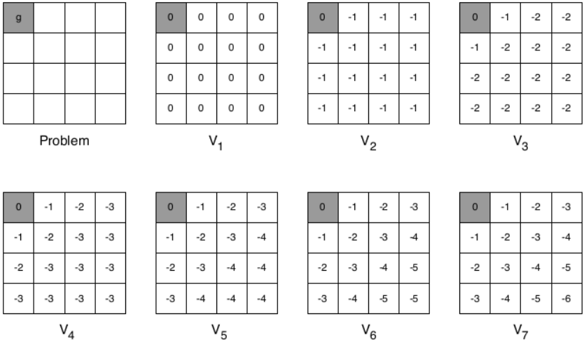
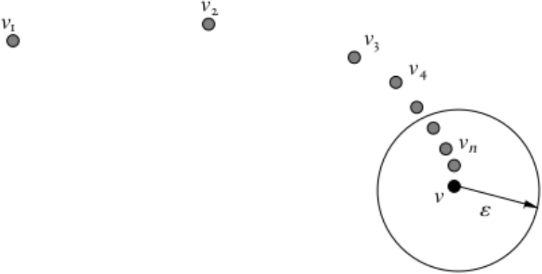
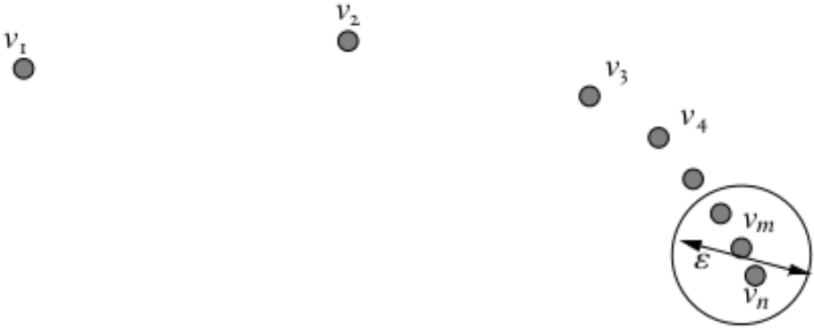
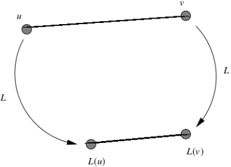
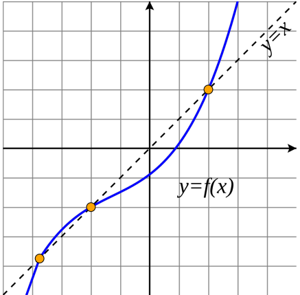
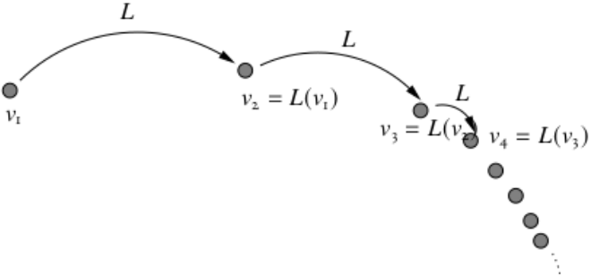
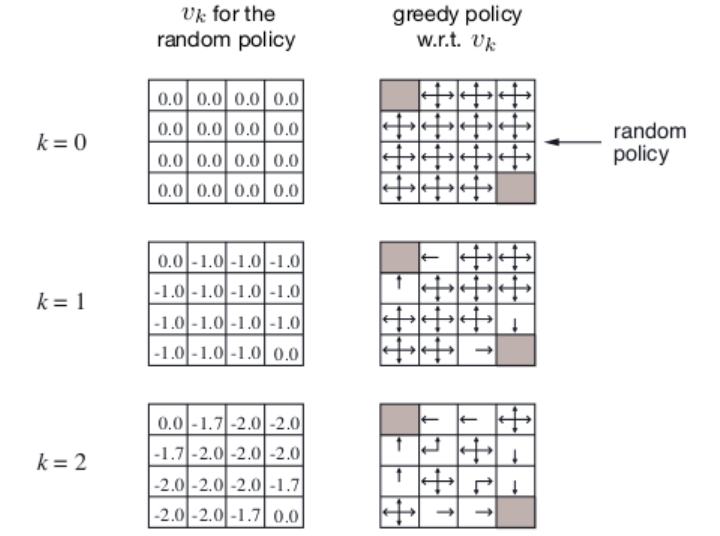
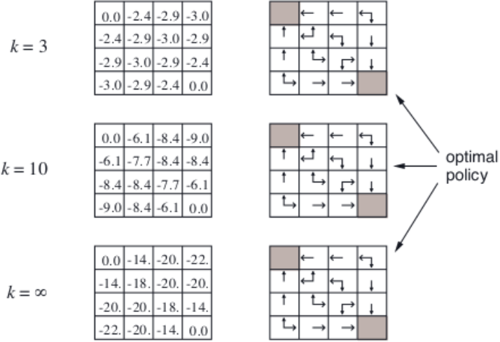
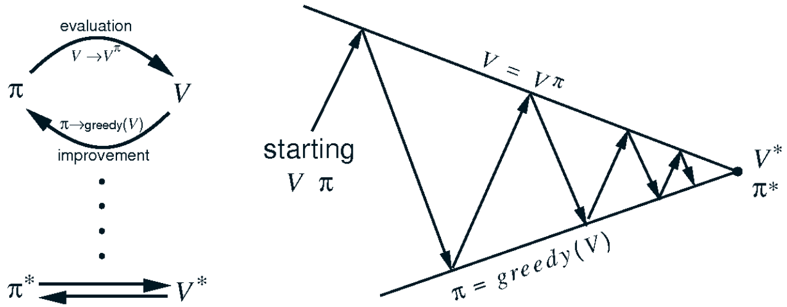

1 Exact method: Policy Iteration
Is there a way to arrive at \pi_* starting from an arbitrary policy \pi, The answer is policy iteration.
- Evaluate the policy \pi
- Compute V^{\pi}(s)=\mathbb{E}_{\pi}(r_{t+1}+\gamma r_{t+2}+\gamma^{2}r_{t+3}+\cdot\cdot\cdot\cdot\vert s_{t}=s)
- Improve the policy \pi
- \pi^{\prime}(s)=\operatorname{greedy}(V^{\pi}(s))
2 Exact method: Value Iteration
Is there a way to arrive at V_* starting from an arbitrary value V_*, The answer is value iteration.
3 Bellman Evaluation Equation
V^{\pi}(s)=\sum_{a}\pi(a|s)\sum_{s^{\prime}}\mathcal{P}_{s s^{\prime}}^{a}\left[\mathcal{R}_{s s^{\prime}}^{a}+\gamma V^{\pi}(s^{\prime})\right]
For a MDP with S=n , Bellman Evaluation Equation for V^\pi (S) is a system of n=|S| (linear) equation with n vriable and can be solved if the model is known
Denote,
{\mathcal{P}}^{\pi}(s^{\prime}|s)=\sum_{a\in\mathcal{A}}\pi\bigl(a|s\bigr){\mathcal{P}}_{s s^{\prime}}^{a}
and
\mathcal R^{\pi}(s)= \sum_{a\in\mathcal{A}}\pi(a|s)\sum_{s^{\prime}}\mathcal{P}_{s s^{\prime}}^{a}\mathcal{R}_{s s^{\prime}}^{a}=\mathbb{E}(r_{t+1}|s_{t}=s)
Using \mathcal P^\pi and \mathcal R^ \pi, fot finite state MDP, Bellman evaluation equation can be written as
V^{\pi}={\cal R}^{\pi}+\gamma{\cal P}^{\pi}V^{\pi}\implies V^{\pi}=(I-\gamma{\cal P}^{\pi})^{-1}{\cal R}^{\pi}
4 Optimality Equation for State Value Function
Recursive formulation for V_*(s) :
V_{*}(s)=\operatorname*{max}_{a}Q_{*}(s,a)=\operatorname*{max}_{a}\left[\sum_{s^{\prime}\in{\cal S}}p_{s s^{\prime}}^{a}(\mathcal{R}_{s s^{\prime}}^{a}+\gamma V_{*}(s^{\prime}))\right]
Optimality equations are non-linear system of equations with n unknowns and n non-linear constraints (the max operator is non-linear)
5 Solving the Bellman Optimality Equation
- Bellman optimality equations are non-linear
- In general, there are no closed form solutions
- Iterative methods are typically used
6 Bellman’s Optimality Principle
The tail of an optimal must be optimal
- Any optimal policy can be subdivided into two components; an optimal first action, followed by an optimal policy from successor state s′ .
7 Solution Methodology : Dynamic Programming
Bellman optimality equation :
V_{*}(s)=\operatorname*{max}_{a}\left[\sum_{s^{\prime}\in{\cal S}}p_{s s^{\prime}}^{a}(\mathcal{R}_{s s^{\prime}}^{a}+\gamma V_{*}(s^{\prime}))\right]
- Optimal Substructure : Optimal solution can be constructed from optimal solutions to subproblems
- Overlapping Subproblems : Problem can be broken down into subproblems and can be reused several times.
- Markov Decision Processes, generally, satisfy both these characteristics.
- Dynamic Programming is a popular solution method for problems having such properties
8 Value Iteration : Idea
- Suppose we know the value V_∗ (s′)
- Then the solution V_∗ (s) can be found by one step look ahead V_{*}(s)\leftarrow \operatorname*{max}_{a}\left[\sum_{s^{\prime}\in{\cal S}}p_{s s^{\prime}}^{a}(\mathcal{R}_{s s^{\prime}}^{a}+\gamma V_{*}(s^{\prime}))\right]
- Idea of value iteration is to perform the above updates iteratively
9 Value Iteration : Algorithm
| Algorithm value Iteration |
- Start with an initial value function V_1(\cdot);
- for k=1,2,\cdots,K do
- for s\in S do
- Calculate V_{k+1}(s)\leftarrow \operatorname*{max}_{a}\left[\sum_{s^{\prime}\in{\cal S}}p_{s s^{\prime}}^{a}(\mathcal{R}_{s s^{\prime}}^{a}+\gamma V_{k}(s^{\prime}))\right]
- end for
- end for

10 Value Iteration : Remarks
- The sequence of value functions \{V_1 , V_2 , \cdots , \} converge to V_*
- Convergence is independent of the choice of V_0
- Intermediate value functions need not correspond to a policy in the sense of satisfying the Bellman Evaluation Equation
- However, for any k, one can come up with a greedy policy as follows: \pi _{k+1}(s)=\leftarrow \text{greedy}V_k(s)
- The crux of proving the above statement lie in Banach Fixed Point Theorem/ Contraction Mapping Theorem
11 Optimality Equation for Action-Value Function
There is a recursive formulation for \mathcal Q_*(\cdot,\cdot)
{\cal Q}_{*}(s,a)=\left[\sum_{s^{\prime}\in S}{\cal P}_{s s^{\prime}}^{a}\left({\cal R}_{s s^{\prime}}^{a}+\gamma\,\operatorname*{max}_{a^{\prime}}(s^{\prime},a^{\prime})\right)\right]
One could similarly conceive an iterative algorithm to compute optimal Q_* using the above recursive formulation
12 Proof of Value Iteration Convergence
12.1 Notion of Convergence
Let \mathcal V be a vector space, A sequence of vectors \{v_n \in \mathcal V\} (with n \in \mathbb N) is said to converge to v if and only if \lim_{n \to \infty} \Vert v_n -v \Vert=0

12.2 Cauchy Sequence
A sequence of vectors \{v_n\}\in \mathcal V (with n \in \mathbb N) is said to be Cauchy sequence if and only if, for each \epsilon > 0, there exists and N_\epsilon such that \Vert v_n-v_m \Vert \le \epsilon for any n,m > N_\epsilon

- It is not necessary that every Cauchy sequence will converge, but if it has completeness then a cauchy sequence will converge
12.3 Notion of Completeness
A normed vector space (\mathcal V, \Vert \cdot \Vert) is complete, if and only if, every Cauchy sequence in \mathcal V converges to a point in \mathcal V
12.4 Contractions
Let (\mathcal V, \Vert \cdot \Vert) be a normed vector space and let L : \mathcal V \rightarrow \mathcal V. we say that L is a contraction, or a contraction mapping, if there is a real number \gamma \in [0,1), such that \Vert L(v)-L(u)\Vert \le \gamma \Vert v-u \Vert for all u and v in \mathcal V, where the term \gamma is called a Lipschitz coefficient for L

12.5 Notion of Fixed point
A vector v \in \mathcal V is a fixed point of the map L : \mathcal V \rightarrow \mathcal V if L(v)=v

12.6 Banach Fixed point theorem
Let \langle \mathcal V, \Vert \cdot \Vert \rangle be a complete normed vector space and let L : \mathcal V \rightarrow \mathcal V be a \gamma - contraction mapping, Then iterative application of L converges to a unique fixed point in \mathcal V independent of the starting point.

12.7 Value Function Space
- \mathcal S is a discrete state space with \vert \mathcal S \vert=n
- \mathcal A_s \subseteq \mathcal A be the non-empty subset of actions allowed from state s
- \mathcal V be a vector space of set of all bounded real valued functions from \mathcal S to \mathbb R
- Measure the distance between state value functions u,v \in \mathcal V using the max-norm defined as follows \|u-v\|=\|u-v\|_{\infty}=\operatorname*{max}_{s\in S}|u(s)-v(s)|\quad s\in S;u,v\in{\mathcal{V}}
- Largest distance between state values
- The space \mathcal V is complete.
12.8 Bellman Evaluation Operator
V^{\pi}_{k+1}(s)=\sum_{a}\pi(a|s)\sum_{s^{\prime}}\mathcal{P}_{s s^{\prime}}^{a}\left[\mathcal{R}_{s s^{\prime}}^{a}+\gamma V^{\pi}_k(s^{\prime})\right]
Denote,
{\mathcal{P}}^{\pi}(s^{\prime}|s)=\sum_{a\in\mathcal{A}}\pi\bigl(a|s\bigr){\mathcal{P}}_{s s^{\prime}}^{a}
and
\mathcal R^{\pi}(s)= \sum_{a\in\mathcal{A}}\pi(a|s)\sum_{s^{\prime}}\mathcal{P}_{s s^{\prime}}^{a}\mathcal{R}_{s s^{\prime}}^{a}=\mathbb{E}(r_{t+1}|s_{t}=s)
Then , we can write,
V^{\pi}={\cal R}^{\pi}+\gamma{\cal P}^{\pi}V^{\pi} OR V_{k+1}={\cal R}^{\pi}+\gamma{\cal P}^{\pi}V_k
Define Bellman Evaluation Operator (\mathcal L^\pi: \mathcal V \rightarrow \mathcal V) as, L^{\pi}(v)={\cal R}^{\pi}+\gamma{\cal P}^{\pi}v
12.9 Bellman Optimality Operator
V_{k+1}(s)=\max_a\left[\sum_{s^{\prime}\in{\cal S}}{\cal P}_{s s^{\prime}}^{a}\left({\cal R}_{s s^{\prime}}^{a}+\gamma V_{k}(s^{\prime})\right)\right]
Denote,
{\mathcal{P}}^{a}(s)=\sum_{s'\in\mathcal{S}}{\mathcal{P}}_{s s^{\prime}}^{a}
and
\mathcal R^{a}(s)= \sum_{s'\in\mathcal{S}}\mathcal{P}_{s s^{\prime}}^{a}\mathcal{R}_{s s^{\prime}}^{a}
Then , we can write,
V_{k+1}=\max_{a \in \mathcal A}\left[ {\cal R}^{a}+\gamma{\cal P}^{a}V_k \right]
Define Bellman Optimality Operator : (\mathcal L: \mathcal V \rightarrow \mathcal V) as,
L(v)=\max_{a\in \mathcal A}[{\cal R}^{a}+\gamma{\cal P}^{a}v]
- Note that since value functions are a mapping from state space to real numbers one can also think of \mathcal L^\pi and \mathcal L as mappings from \mathbb R_d \to \mathbb R_d
12.10 Fixed Points of Maps \mathcal L^\pi and \mathcal L
We can see that V^\pi is a fixed point of function \mathcal L^\pi
\mathcal L^\pi V^\pi=V^\pi
and V_* is fixed point of operator \mathcal L
\mathcal L V_*=V_*
12.11 Bellman Evaluation Operator is a Contraction
Recall that Bellman evaluation operator is given by (\mathcal L^\pi: \mathcal V \rightarrow \mathcal V) L^{\pi}(v)={\cal R}^{\pi}+\gamma{\cal P}^{\pi}v
- This operator is \lambda contraction. i.e., it makes value fuctions closer by at least \lambda.
Proof
- For any two value functions u and v in the space V, we have,
\begin{align*} \|L^\pi(u)-L^\pi(v)\|_\infty &= \|(\mathcal R^\pi + \lambda \mathcal P^\pi u)-(\mathcal R^\pi + \lambda \mathcal P^\pi v)\|_\infty \\ &= \|\lambda \mathcal P^\pi(u-v)\|_\infty\\ &\le \gamma \| \mathcal P ^\pi \|_\infty \|(u-v)\|_\infty = \gamma \|u-v\|_\infty\\ \end{align*}
we used the property that for every x \in \mathbb R^n, and A , a m \times n matrix, \|Ax\|_\infty \le \|A\|_\infty \|x\|_\infty
12.12 Convergence of bellman Updates
- Banach fixed-point theorem guarantees that iteratively applying evaluation operator \mathcal L^\pi to any function V \in \mathcal V will converge to a unique function V^\pi \in V
- Similarly, the Bellman optimality operator (\mathcal L : \mathcal V \to \mathcal V) L(v)=\max_{a\in \mathcal A}[{\cal R}^{a}+\gamma{\cal P}^{a}v] is also (A similar argument as \mathcal L^\pi) a \gamma contraction and hence iteratively applying optimality operator \mathcal L to any function V \in \mathcal V will converge to a unique function V_* \in V
- Also, V_* = \max_\pi V^\pi(\cdot)
13 Policy Iteration
We can arrive at \pi_* starting form an arbitrary policy \pi
- Evaluate the policy \pi
- Compute V^{\pi}(s)={\mathbb{E}}_{\pi}(r_{t+1}+{\gamma}{r_{t+2}}+{\gamma}^{2}r_{t+3}+\cdot\cdot\cdot\cdot\cdot\vert s_{t}=s)
- Improve policy \pi
- \pi'(s)=\text{greedy}(V^\pi(s) )
13.1 Policy Evaluation
Problem : Evaluate a given policy \pi
Compute V^{\pi}(s)={\mathbb{E}}_{\pi}(r_{t+1}+{\gamma}{r_{t+2}}+{\gamma}^{2}r_{t+3}+\cdot\cdot\cdot\cdot\cdot\vert s_{t}=s)
Solution 1: solve a system of linear equation using any solver
Solution 2: Iterative application of Bellman Evaluation Equation
- Iterative update rule : V_{k+1}^{\pi}(s)\leftarrow\sum_{a}\pi(a|s)\sum_{s^{\prime}}\mathcal{P}_{s s^{\prime}}^{a}\left[\mathcal{R}_{s s^{\prime}}^{a}+\gamma\mathcal{V}_{k}^{\pi}(s^{\prime})\right]
- The sequence of value function \{V_1^\pi,V_2^\pi, \cdots ,\} converges to V^\pi
13.2 Policy Improvement
Suppose we know V^\pi . How to improve policy \pi
The answer lies in the definition of action value function Q^\pi (s,a), Recall that,
\begin{align*} Q^{\pi}(s,a)&=\mathbb{E}_{\pi}\left(\sum_{k=0}^{\infty}\gamma^{k}r_{t+k+1}|s_{t}=s,a_{t}=a\right)\\ &= \mathbb{E}(r_{t+1}+\gamma V^{\pi}(s_{t+1})|s_{t}=s,a_{t}=a)\\ &=\sum_{s^{\prime}\in{\mathcal{S}}}{\mathcal{P}}_{s s^{\prime}}^{a}\left[{\mathcal{R}}_{s s^{\prime}}^{a}+\gamma\mathcal{V}^{\pi}\left(s^{\prime}\right)\right] \end{align*}
- If \mathcal{Q}^{\pi}(s,a)>V^{\pi}(s) \implies Better to select action a in state s and thereafter follow the policy \pi
- This is a special case of the policy improvement theorem.
Policy Improvement Theorem
Let \pi and \pi^* be any pair of deterministic policy such that, for all s \in \mathcal S,
Q^{\pi}(s,\pi^{\prime}(s))\ge V^{\pi}(s). Then V^{\pi^{\prime}}(s)\geq V^{\pi}(s) \quad \forall s \in \mathcal S
Proof :
\begin{align*} V^\pi(s) &\le {\cal{Q}}^{\pi}(s,\pi^{\prime}(s))=\mathbb{E}_{\pi^{\prime}}(r_{t+1}+\gamma V^{\pi}(s_{t+1})|s_{t}=s)\\ &\le \mathbb{E}_{\pi^{\prime}}(r_{t+1}+\gamma Q^{\pi}(s_{t+1},\pi^{\prime}(s_{t+1}))|s_{t}=s)\\ &=\mathbb{E}_{\pi^{\prime}}(r_{t+1}+\gamma r_{t+2}+\gamma^{2}V^{\pi}(s_{t+2})|s_{t}=s)\\ &\le \mathbb{E}_{\pi^{\prime}}(r_{t+1}+\gamma r_{t+2}+\gamma^{2}Q^{\pi}(s_{t+2},\pi^{\prime}(s_{t+2}))|s_{t}=s)\\ &\le \mathbb{E}_{\pi^{\prime}}(r_{t+1}+\gamma r_{t+2}+\gamma^{2}r_{t+3}+\cdot\cdot\cdot\cdot\left|s_{t}=s\right)=V^{\pi^{'}}(s) \end{align*}
- Now consider the greedy policy \pi' = \text{greedy}(V^\pi)
- Then, \pi' \ge \pi, That is V^{\pi'}(S) \ge V^{\pi}(S) \quad \forall s \in \mathcal S
- By definition of \pi', at state s, the action chosen by policy \pi' is given by the greedy operator \pi'(s) = \argmax_a Q^\pi (s, a)
- This improves the value from any state s over one step Q^{\pi}(s,\pi^{\prime}(s))=\operatorname*{max}_{a}Q^{\pi}(s,a)\geq Q^{\pi}(s,\pi(s))=V^{\pi}(s)
- It therefore improves the value function, V^{\pi^{\prime}}(s)\ge V^{\pi}\left(s\right)
- Policy \pi' is at least as good as policy \pi
- If improvement stops, Q^{\pi}(s,\pi^{\prime}(s))=\operatorname*{max}_{a}Q^{\pi}(s,a)=Q^{\pi}(s,\pi(s))=V^{\pi}(s)
- Bellman Optimality equation is satisfied as, V^\pi(s)=\max_a Q^\pi (s,a)
- The policy \pi for which the improvement stops is the optimal policy. V^\pi(s)=V_*(s)\quad \forall s \in \mathcal S
13.3 Policy Iteration : Algorithm
| Algorithm Policy Iteration |
- Start with an initial policy \pi_1
- For i=1,2,\cdots,N do
- Evaluate V^{\pi_i}(s)\quad \forall s \in \mathcal S. That is,
- For k=1,2,\cdots K do
- For all s \in \mathcal S calculate V_{k+1}^{\pi_{i}}(s)\leftarrow\sum_{a}\pi(a|s)\sum_{s^{\prime}}\mathcal{P}_{s s^{\prime}}^{a}\ \left[{\mathcal{R}}_{s s^{\prime}}^{a}\ +\gamma V_{k}^{\pi_{i}}(s^{\prime})\right]
- end for
- Perform policy Improvement \pi_{i+1}=\text{greedy}(V^{\pi_i})
- End for
 
13.4 Policy Iteration : Schematic Representation

- The sequence \{\pi_1,\pi_2,\cdots\} is guaranteed to converge.
- At convergence, both current policy and the value function associated with the policy are optimal.
13.5 Modified Policy Iteration
Can we computationally simplify policy iteration process
- We need not wait for policy evaluation to converge to V^\pi
- We can have a stopping criterion like \epsilon- convergence of value function evaluation or K iteration of policy evaluation
- Extreme case of K=1 is value iteration, we update the policy every iteration.
14 Possible Extension
14.1 Asynchronous Dynamic Programming
- Update to states are done individually, in any order
- For each selected state, apply the appropriate backup
- Can significantly reduce computation
- Convergence guaranteed exist, if all states are selected sufficient number of times.
14.2 Real Time Dynamic Programming
- Idea : Update only states that are relevant to agent
- After each time step, we get s_t,a_t,r_{t+1}
- perform the following update V{\big(}s_{t}{\big)}\leftarrow{\mathrm{max}}\left[\sum_{s^{\prime}\in{\cal S}}{\mathcal{P}}_{s_{t}s^{\prime}}^{a}\left({\mathcal{R}}_{s_{t}s^{\prime}}^{a}+\gamma V(s^{\prime})\right)\right]
15 Remarks
- MDP Setting : The agent has knowledge of the state transition matrices \mathcal P_{ss'} and the reward function \mathcal R
- RL Setting : The agent does not have knowledge of the state transition matrices \mathcal P^a_{ss'} and the reward function \mathcal R
- The goal in both cases are same; Determine optimal sequence of actions such that the total discounted future reward is maximum.
- Although, this course would assume Markovian structure to state transitions, in many (sequential) decision making problems we may have to consider the history as well.
Prediction and Control using Dynamic Programming :
- Dynamic Programming assumes full knowledge of MDP
- Used for both prediction and control in an MDP
- Prediction
- Input MDP \langle \mathcal S, \mathcal A, \mathcal P, \mathcal R, \gamma \rangle and policy \pi
- output v^\pi(\cdot)
- Control
- Input MDP \langle \mathcal S, \mathcal A, \mathcal P, \mathcal R, \gamma \rangle
- Output Optimal value function V_*(\cdot) or optimal policy \pi_*
\tiny {\textcolor{#808080}{\boxed{\text{Reference: Dr. Vineeth, IIT Hyderabad }}}}